일반기계기사 (2018-04-28 기출문제)
1과목: 재료역학
1. 원형 단면축이 비틀림을 받을 때, 그 속에 저장되는 탄성 변형에너지 U는 얼마인가?(단, T : 토크, L : 길이, G : 가로탄성계수, IP: 극관성모멘트, I : 관성모멘트, E : 세로 탄성계수이다.)
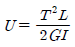
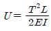
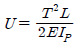
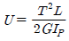
(정답률: 68%)

2. 그림과 같은 전길이에 걸쳐 균일 분포하중 ω를 받는 보에서 최대처짐 δmax를 나타내는 식은? (단, 보의 굽힘 강성계수는 EI 이다.)
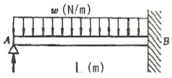
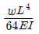
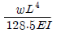
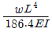
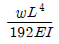
(정답률: 50%)
3. 그림과 같은 보에서 발생하는 최대굽힘 모멘트는 몇 kN∙m 인가?
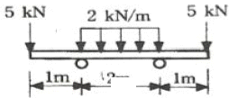
- 2
- 5
- 7
- 10
(정답률: 59%)
4. 그림의 H형 단면의 도심축인 Z축에 관한 회전반경(radius of gyration)은 얼마인가?(오류 신고가 접수된 문제입니다. 반드시 정답과 해설을 확인하시기 바랍니다.)
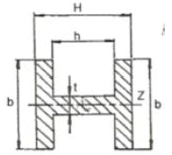
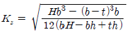
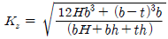
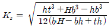
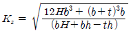
(정답률: 50%)
5. 그림에 표시한 단순 지지보에서의 최대 처짐량은? (단, 보의 굽힘 강성은 EI이고, 자중은 무시한다.)
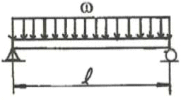
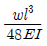
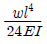
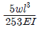
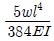
(정답률: 69%)
6. 그림에서 784.8N과 평형을 유지하기 위한 힘 F1과 F2는?
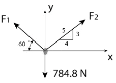
- F1= 392.5 N, F2= 632.4 N
- F1= 790.4 N, F2= 632.4 N
- F1= 790.4 N, F2= 395.2 N
- F1= 632.4 N, F2= 395.2 N
(정답률: 65%)
7. 지름이 60mm인 연강축이 있다. 이 축의 허용전단응력은 40MPa이며 단위길이 1m당 허용 회전각도는 1.5° 이다. 연강의 전단 탄성계수를 80GPa이라 할 때 이 축의 최대 허용 토크는 약 몇 N∙m 인가? (단, 이 코일에 작용하는 힘은 P, 가로탄성게수는 G이다.)
- 696
- 1696
- 2664
- 3664
(정답률: 44%)
8. 지름 3cm인 강축이 26.5 rev/s의 각속도로 26.5kW의 동력을 전달하고 있다. 이 축에 발생하는 최대 전단응력은 약 몇 MPa 인가?
- 30
- 40
- 50
- 60
(정답률: 58%)
9. 폭 3cm, 높이 4cm의 직사각형 단면을 갖는 외팔보가 자유단에 그림에서와 같이 집중하중을 받을 때 보 속에 발생하는 최대전단응력은 몇 N/cm2인가?
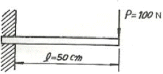
- 12.5
- 13.5
- 14.5
- 15.5
(정답률: 64%)
10. 평면 응력 상태에서 εx=-150×10-6, εy=-280 ×10-6, rxy=850×10-6일 때, 최대주변형률(ε1)과 최소주변형률(ε2)은 각각 약 얼마인가?(오류 신고가 접수된 문제입니다. 반드시 정답과 해설을 확인하시기 바랍니다.)
- ε1=215×10-6, ε2=-645×10-6
- ε1=645×10-6, ε2=215×10-6
- ε1=315×10-6, ε2=645×10-6
- ε1=-545×10-6, ε2=315×10-6
(정답률: 40%)
11. 길이 6m 인 단순 지지보에 등분포하중 q가 작용할 때 단면에 발생하는 최대 굽힘응력이 337.5MPa이라면 등분포하중 q는 약 몇 kN/m인가? (단, 보의 단면은 폭 x 높이 = 40mm x 100 mm 이다.)
- 4
- 5
- 6
- 7
(정답률: 60%)
12. 보의 자중을 무시할 때 글미과 같이 자유단 C에 집중하중 2P가 작용할 때 B점에서 처짐 곡석의 기울기각은?
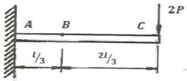
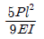
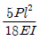
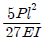
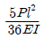
(정답률: 40%)
13. 그림과 같은 외팔보에 대한 전단력 선도로 옳은 것은? (단, 아랫방향을 양(+)으로 본다.)
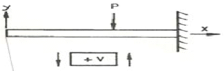
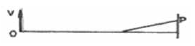
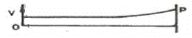
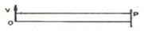
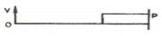
(정답률: 59%)
14. 그림과 같이 길이가 동일한 2개의 기둥 상단에 중심 압축 하중 2500N이 작용할 경우 전체 수축량은 약 몇 mm인가? (단, 단면적 A1= 1000mm2, A2= 2000mm2, 길이 L=300mm, 재료의 탄성계수 E= 90GPa 이다.)
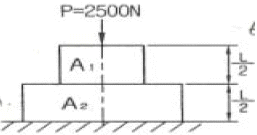
- 0.625
- 0.0625
- 0.00625
- 0.000625
(정답률: 59%)
15. 최대 사용강도 400MPa의 연강봉에 30kN의 축방향의 인장하중이 가해질 경우 강봉의 최소지름은 몇 cm까지 가능한가? (단, 안전율은 5이다.)
- 2.69
- 2.99
- 2.19
- 3.02
(정답률: 65%)
16. 그림과 같이 A, B의 원형 단면봉은 길이가 같고, 지름이 다르며, 양단에서 같은 압축하중 P를 받고 있다. 응력은 각 단면에서 균일하게 분포된다고 할 때 저장되는 탄성 변형 에너지의
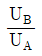
는 얼마가 되겠는가?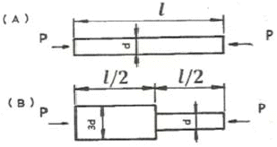
- 1/3
- 5/9
- 2
- 9/5
(정답률: 56%)
17. 다음과 같이 3개의 링크를 핀을 이용하여 연결하였다. 2000N의 하중 P가 작용할 경우 핀에 작용되는 전단응력은 약 몇 MPa인가? (단, 핀의 직경은 1cm이다.)
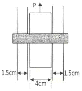
- 12.73
- 13.24
- 15.63
- 16.56
(정답률: 47%)
18. 원통형 압력용기에 내압 P가 작용할 때, 원통부에 발생하는 축 방향의 변형률 εx 및 원주 방향 변형률 εy는? (단, 강판의 두께 t는 원통의 지름 D에 비하여 충분히 작고, 강판 재료의 탄성계수 및 포아송 비는 각 E,v이다.)
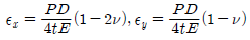
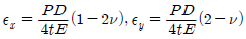
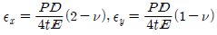
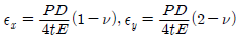
(정답률: 41%)
19. 지름 20 mm, 길이 1000 mm의 연강봉이 50kN의 인장하중을 받을 때 발생하는 신장량은 약 몇 mm인가? (단, 탄성계수 E = 210GPa이다.)
- 7.58
- 0.758
- 0.0758
- 0.00758
(정답률: 63%)
20. 지름이 0.1m이고 길이가 15m인 양단힌지인 원형강 장주의 좌굴임계하중은 약 몇 kN인가? (단, 장주의 탄성계수는 200GPa이다.)
- 43
- 55
- 67
- 79
(정답률: 59%)
2과목: 기계열역학
21. 온도 150℃, 압력 0.5MPa의 공기 0.2kg이 압력이 일정한 과정에서 원래 체적의 2배로 늘어난다. 이 과정에서의 일은 약 몇 kJ인가? (단, 공기는 기체상수가 0.287kJ/(kg∙K)인 이상기체로 가정한다.)
- 12.3 kJ
- 16.5 kJ
- 20.5 kJ
- 24.3 kJ
(정답률: 61%)
22. 마찰이 없는 실린더 내에 온도 500K, 비엔트로피 3kJ/(kg∙K)인 이상기체가 2kg 들어있다. 이 기체의 비엔트로피가 10kJ/(kg∙K)이 될 때까지 등온괴정으로 가열한다면 가열량은 약 몇 kJ인가?
- 1400 kJ
- 2000 kJ
- 3500 kJ
- 7000 kJ
(정답률: 43%)
23. 랭킨 사이클의 열효율을 높이는 방법으로 틀린 것은?
- 복수기의 압력을 저하시킨다.
- 보일러 압력을 상승시킨다.
- 재열(reheat) 장치를 사용한다.
- 터빈 출구 온도를 높인다.
(정답률: 54%)
24. 유체의 교축과정에서 Joule-Thomson 계수 (μJ)가 중요하게 고려되는데 이에 대한 설명으로 옳은 것은?
- 등엔탈피 과정에 대한 온도변화와 압력변화와 비를 나타내며 μJ＜0인 경우 온도상승을 의미한다.
- 등엔탈피 과정에 대한 온도변화와 압력변화의 비를 나타내며 μJ＜0인 경우 온도 강하를 의미한다.
- 정적 과정에 대한 온도변화와 압력변화의 비를 나타내며 μJ＜0인 경우 온도 상승을 의미한다.
- 정적 과정에 대한 온도변화와 압력변화의 비를 나타내며 μJ＜0인 경우 온도 강하를 의미한다.
(정답률: 31%)
25. 이상적인 카르노 사이클의 열기관이 500℃인 열원으로부터 500 kJ을 받고, 25℃에 열을 방출한다. 이 사이클의 일(W)과 효율(nth)은 얼마인가?
- W= 307.2 kJ, nth = 0.6143
- W= 207.2 kJ, nth = 0.5748
- W= 250.3 kJ, nth = 0.8316
- W= 401.5 kJ, nth = 0.6517
(정답률: 65%)
26. Brayton 사이클에서 압축기 소요일은 175 kJ/kg, 공급열은 627 kJ/kg, 터빈 발생일은 406 kJ/kg로 작동될 때 열효율은 약 얼마인가?
- 0.28
- 0.37
- 0.42
- 0.48
(정답률: 53%)
27. 그림과 같이 다수의 추를 올려놓은 피스톤이 장착된 실린더가 있는데, 실린더 내의 압력은 300 kPa, 초기 체적은 0.⑤m3이다. 이 실린더에 열을 가하면서 적절히 추를 제거하여 포리트로픽 지수가 1.3인 폴리트로픽 변화가 일어나도록 하여 최종적으로 실린더 내의 체적이 0.2m3이 되었다면 가스가 한 일은 약 몇 kJ인가?
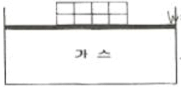
- 17
- 18
- 19
- 20
(정답률: 38%)
28. 다음의 열역학 상태량 중 종량적 상태량(extensive property)에 속하는 것은?
- 압력
- 체적
- 온도
- 밀도
(정답률: 65%)
29. 피스톤-실린더 장치 내에 공기가 0.3m3에서 0.1m3으로 압축되었다. 압축되는 동안 압력(P)과 체적(V) 사이에 p = aV-2의 관계가 성립하며, 계수 a = 6kPa∙m6이다. 이 과정 동안 공기가 한 일은 약 얼마인가?
- -53.3 kJ
- -1.1 kJ
- 253 kJ
- -40 kJ
(정답률: 48%)
30. 매시간 20kg의 연료를 소비하여 74kW의 동력을 생산하는 가솔린 기관의 열효율은 약몇 %인가? (단, 가솔린의 저위발열량은 43470kJ/kg이다.)
- 18
- 22
- 31
- 43
(정답률: 64%)
31. 다음 중 이상적인 증기 터빈의 사이클인 랭킨사이클을 옳게 나타낸 것은?
- 가역등온압축 → 정압가열 → 가역등온팽창 → 정압냉각
- 가역단열압축 → 정압가열 → 가역단열팽창 → 정압냉각
- 가역등온압축 → 정적가열 → 가역등온팽창 → 정적냉각
- 가역단열압축 → 정적가열 → 가역단열팽창 → 정적냉각
(정답률: 51%)
32. 내부 에너지가 30kJ인 물체에 열을 가하여 내부 에너지가 50kJ이 되는 동안에 외부에 대하여 10kJ의 일을 하였다. 이 물체에 가해진 열량은?
- 10kJ
- 20kJ
- 30kJ
- 60kJ
(정답률: 60%)
33. 천제연 폭포의 높이가 55m이고 주위와 열교환을 무시한다면 폭포수가 낙하한 후 수면에 도달할 때까지 온도 상승은 약 몇 K인가? (단, 폭포수의 비열은 4.2kJ/(kg∙K) 이다.)
- 0.87
- 0.31
- 0.13
- 0.68
(정답률: 49%)
34. 어떤 카르노 열기관이 100℃ 와 30℃ 사이에서 작동되며 100℃의 고온에서 100 kJ의 열을 받아 40kJ의 유용한 일을 한다면 이 열기관에 대하여 가장 옳게 설명한 것은?
- 열역학 제 1법칙에 위배된다.
- 열역학 제 2법칙에 위배된다.
- 열역학 제1법칙과 제2법칙에 모두 위배되지 않는다.
- 열역학 제1법칙과 제2법칙에 모두 위배된다.
(정답률: 42%)
35. 증기 압축 냉동 사이클로 운전하는 냉동기에서 압축기 입구, 응축기 입구, 증발기 입구의 엔탈피가 각각 387.2kJ/kg, 435.1kJ/kg, 241.8kJ/kg일 경우 성능계수는 약 얼마인가?(오류 신고가 접수된 문제입니다. 반드시 정답과 해설을 확인하시기 바랍니다.)
- 3.0
- 4.0
- 5.0
- 6.0
(정답률: 42%)
36. 온도 20℃에서 계기압력 0.183MPa의 타이어가 고속주행으로 온도 80℃로 상승할 때 압력은 주행 전과 비교하여 약 몇 kPa 상승하는가? (단, 타이어의 체적은 변하지 않고, 타이어 내의 공기는 이상기체로 가정한다. 그리고 대기압은 101.3kPa이다.)
- 37 kPa
- 58 kPa
- 286 kPa
- 445 kPa
(정답률: 39%)
37. 온도가 T1인 고열원으로부터 온도가 T2인 저열원으로 열전도, 대류, 복사 등에 의해 Q만큼 열전달이 이루어졌을 때 전체 엔트로피 변화량을 나타내는 식은?
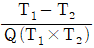
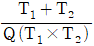
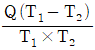
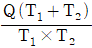
(정답률: 62%)
38. 1 kg의 공기가 100℃ 를 유지하면서 가역등온팽창하여 외부에 500kJ의 일을 하였다. 이 때 엔트로피의 변화량은 약 몇 kJ/K인가?
- 1.895
- 1.665
- 1.467
- 1.340
(정답률: 62%)
39. 습증기 상태에서 엔탈피 h를 구하는 식은? (단, hf는 포화액의 엔탈피, hg 는 포화증기의 엔탈피, x는 건도이다.)
- h=hf+(xhg-hf)
- h=hf+x(hg-hf)
- h=hg+(xhf-hg)
- h=hg+x(hg-hf)
(정답률: 61%)
40. 이상기체에 대한 관계식 중 옳은 것은? (단, Cp , Cv는 저압 및 정적 비열, k는 비열비이고, R은 기체 상수이다.)
- Cp=Cv-R
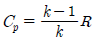
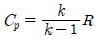
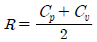
(정답률: 63%)
3과목: 기계유체역학
41. 길이가 150m의 배가 10m/s의 속도로 항해하는 경우를 길이 4m의 모형 배로 실험하고자 할 때 모형 배의 속도는 약 몇 m/s로 해야 하는가?
- 0.133
- 0.534
- 1.068
- 1.633
(정답률: 61%)
42. 그림과 같은 수문(폭x높이 = 3m x 2m)이 있을 경우 수문에 작용하는 힘의 작용점은 수면에서 몇 m 깊이에 있는가?
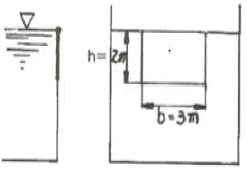
- 약 0.7m
- 약 1.1m
- 약 1.3m
- 약 1.5m
(정답률: 53%)
43. 흐르는 물의 속도가 1.4m/s일 때 속도 수두는 약 몇 m인가?
- 0.2
- 10
- 0.1
- 1
(정답률: 63%)
44. 다음의 무차원수 중 개수로와 같은 자유표면 유동과 가장 밀접한 관련이 있는 것은?
- Euler수
- Froude수
- Mach수
- Plantl수
(정답률: 59%)
45. x, y평면의 2차원 비압축성 유동장에서 유동함수(stream function)
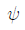
는 =3xy로주어진다. 점 (6, 2)과 점 (4, 2)사이를 흐르는 유량은?
=3xy로주어진다. 점 (6, 2)과 점 (4, 2)사이를 흐르는 유량은?- 6
- 12
- 16
- 24
(정답률: 39%)
46. 원통 속의 물이 중심축에 대하여 ω의 각속도로 강체와 같이 등속회전하고 있을 때 가장 압력이 높은 지점은?
- 바닥면의 중심점 A
- 액체 표면의 중심점 B
- 바닥면의 가장자리 C
- 액체 표면의 가장자리 D
(정답률: 52%)
47. 개방된 탱크 내에 비중이 0.8인 오일이 가득차 있다. 대기압이 101 kPa라면, 오일탱크 수면으로부터 3m 깊이에서 절대압력은 약 몇 kPa인가?
- 25
- 249
- 12.5
- 125
(정답률: 60%)
48. 그림과 같이 물이 고여있는 큰 댐 아래에 터빈이 설치되어 있고, 터빈의 효율이 85%이다. 터빈 이외에서의 다른 모든 손실을 무시할 때 터빈의 출력은 약 몇 kW인가? (단, 터빈 출구관의 지름은 0.8m, 출구속도 V는 10m/s이고 출구압력은 대기압이다.)
- 1043
- 1227
- 1470
- 1732
(정답률: 20%)
49. 2차원 정상유동의 속도 방정식이 V=3(-xi+yj)라고 할 때, 이 유동의 유선의 방정식은? (단, C는 상수를 의미한다.)
- xy=C
- y/x=C
- x2y=C
- x3y=C
(정답률: 50%)
50. 지름 2cm의 노즐을 통하여 평균속도 0.5m/s로 자동차의 연료 탱크에 비중 0.9인 휘발유 20kg 채우는데 걸리는 시간은 약 몇 s 인가?
- 66
- 78
- 102
- 141
(정답률: 51%)
51. 체적탄성계수가 2.086GPa인 기름의 체적을 1% 감소시키려면 가해야 할 압력은 몇 Pa인가?
- 2.086x107
- 2.086x104
- 2.086x103
- 2.086x102
(정답률: 60%)
52. 경계층의 박리(separation)현상이 일어나기 시작하는 위치는?
- 하류방향으로 유속이 증가할 때
- 하류방향으로 유속이 감소할 때
- 경계층 두께가 0으로 감소될 때
- 하류방향의 압력기울기가 역으로 될 때
(정답률: 53%)
53. 원관 내에 완전발달 층류유동에서 유량에 대한 설명으로 옳은 것은?
- 관의 길이에 비례한다.
- 관 지름의 제곱에 반비례한다.
- 압력강하에 반비례한다.
- 점성계수에 반비례한다.
(정답률: 61%)
54. 표면장력의 차원으로 맞는 것은? (단, M : 질량, L : 길이, T : 시간)
- MLT-2
- ML2T-1
- ML-1T-2
- MT-2
(정답률: 36%)
55. 수평으로 놓인 안지름 5 cm인 곧은 원관속에서 점성계수 0.4Pa∙s의 유체가 흐르고 있다. 관의 길이 1m당 압력강하가 8 kPa이고 흐름 상태가 층류일 때 관 중심부에서의 최대 유속(m/s)은?
- 3.125
- 5.217
- 7.312
- 9.714
(정답률: 47%)
56. 그림과 같이비중 0.8인 기름이 흐르고 있는 개수로에 단순 피토관을 설치하였다. Δh=20mm, h=30mm일 때 속도 V는 약 몇 m/s 인가?
- 0.56
- 0.63
- 0.77
- 0.99
(정답률: 52%)
57. 벽면에 평행한 방향의 속도(u) 성분만이 있는 유동장에서 전단응력을 τ, 점성 계수를 μ, 벽면으로부터의 거리를 y로 표시하면 뉴턴의 점성법칙을 옳게 나타낸 식은?
(정답률: 61%)
58. 여객기가 888km/h 로 비행하고 있다. 엔진의 노즐에서 연소가스를 375m/s로 분출하고, 엔진의 흡기량과 배출되는 연소가스의 양은 같다고 가정하면 엔진의 추진력은 약 몇N인가? (단, 엔진의 흡기량은 30kg/s이다.)
- 3850N
- 5325N
- 7400N
- 11250N
(정답률: 45%)
59. 구형 물체 중위의 비압축성 점성 유체의 흐름에서 유속이 대단히 느릴 때(레이놀즈수가 1보다 작을 경우) 구형 물체에 작용하는 항력 Dr은? (단, 구의 지름은 d, 유체의 점성계수를 μ, 유체의 평균속도를 V라 한다.)
- Dr=3πμdV
- Dr=6πμdV
(정답률: 57%)
60. 지름이 10mm의 매끄러운 관을 통해서 유량 0.02L/s의 물이 흐를 때 길이 10m에 대한 압력손실은 약 몇 Pa 인가?(단, 물의 동점성계수는 1.4×10-6 이다.
- 1.140 Pa
- 1.819 Pa
- 1140 Pa
- 1819 Pa
(정답률: 46%)
4과목: 기계재료 및 유압기기
61. 다음은 일반적으로 수지에 나타나는 배향특성에 대한 설명으로 틀린 것은?
- 금형온도가 높을수록 배향은 커진다.
- 수지의 온도가 높을수록 배향이 작아진다.
- 사출 시간이 증가할수록 배향이 증대된다.
- 성형품의 살두께가 얇아질수록 배향이 커진다.
(정답률: 24%)
62. 표점거리가 100mm, 시험편의 평행부 지름이 14mm인 시험편을 최대하중 6400kgf로 인장한 후 표점거리가 120mm로 변화 되었을 때 인장강도는 약 몇 kgf/mm2인가?
- 10.4
- 32.7
- 41.6
- 61.4
(정답률: 55%)
63. 금속침투법 중 Zn을 강 표면에 침투 확산시키는 표면처리법은?
- 크로마이징
- 세라다이징
- 칼로라이징
- 브로나이징
(정답률: 71%)
64. 다음 그림과 같은 상태도의 명칭은?
- 편정형 고용체 상태도
- 전율 고용체 상태도
- 공정형 한율 상태도
- 부분 고용체 상태도
(정답률: 38%)
65. 황(S) 성분이 적은 선철을 용해로에서 용해한 후 주형에 주입 전 Mg, Ca 등을 첨가시켜 흑연을 구상화한 주철은?
- 합금주철
- 칠드주철
- 가단주철
- 구상흑연주철
(정답률: 73%)
66. 금속나트륨 또는 플루오르화 알칼리 등의 첨가에 의해 조직이 미세화 되어 기계적성질의 개선 및 가공성이 증대되는 합금은?
- Al - Si
- Cu - Sn
- Ti - Zr
- Cu - Zn
(정답률: 43%)
67. 다음 합금 중 베어링용 합금이 아닌 것은?
- 화이트메탈
- 켈밋합금
- 배빗메탈
- 문쯔메탈
(정답률: 60%)
68. 상온에서 순철의 결정격자는?
- 체심입방격자
- 면심입방격자
- 조밀육방격자
- 정밥격자
(정답률: 57%)
69. 탄소함유량이 0.8%가 넘는 고탄소강의 담금질 온도로 가장 적당한 것은?
- A1온도보다 30 ~ 50℃ 정도 높은 온도
- A2온도보다 30 ~ 50℃ 정도 높은 온도
- A3온도보다 30 ~ 50℃ 정도 높은 온도
- A4 온도보다 30 ~ 50℃ 정도 높은 온도
(정답률: 43%)
70. 영구 자석강이 갖추어야 할 조건으로 가장 적당한 것은?
- 잔류자속 밀도 및 보자력이 모두 클 것
- 잔류자속 밀도 및 보자력이 모두 작을 것
- 잔류자속 밀도가 작고 보자력이 클 것
- 잔류자속 밀도가 크고 보자력이 작을 것
(정답률: 59%)
71. 체크밸브, 릴리프 밸브 등에서 압력이 상승하고 밸브가 열리기 시작하여 어느 일정한 흐름의 양이 인정되는 압력은?
- 토출 압력
- 서지 압력
- 크래킹 압력
- 오버라이드 압력
(정답률: 59%)
72. 그림은 KS 유압 도면기호에서 어떤 밸브를 나타낸 것 인가?
- 릴리프 밸브
- 무부하 밸브
- 시퀀스 밸브
- 감압 밸브
(정답률: 40%)
73. 다음 유압회로는 어떤 회로에 속하는가?
- 로크 회로
- 무부화 회로
- 블리드 오프 회로
- 어큐뮬레이터 회로
(정답률: 52%)
74. 유압모터의 종류가 아닌 것은?
- 회전피스톤 모터
- 베인 모터
- 기어 모터
- 나사 모터
(정답률: 65%)
75. 유압 베인 모터의 1회전 당 유량이 50cc일 때, 공급 압력을 800 N/cm2 , 유량을 30L/min 으로 할 경우 베인 모터의 회전수는 약 몇 rpm인가? (단, 누설량은 무시한다.)
- 600
- 1200
- 2666
- 5333
(정답률: 34%)
76. 그림과 같은 유압 잭에서 지름이 D2=2D1일 때 누르는 힘 F1과 F2의 관계를 나타낸 식으로 옳은 것은?
- F2 = F1
- F2 = 2F1
- F2 = 4F1
- F2= 8F1
(정답률: 71%)
77. 다음 어큐뮬레이터의 종류 중 피스톤 형의 특징에 대한 설명으로 가장 적절하지 않는 것은?
- 대형도 제작이 용이하다.
- 축유량을 크게 잡을 수 있다.
- 형상이 간단하고 구성품이 적다.
- 유실에 가스 침입의 염려가 없다.
(정답률: 56%)
78. 주로 펌프의 흡입구에 설치되어 유압작동유의 이물질을 제거하는 용도로 사용하는 기기는?
- 드레인 플러그
- 스트레이너
- 블래더
- 배플
(정답률: 67%)
79. 카운터 밸런스 밸브에 관한 설명으로 옳은 것은?
- 두 개 이상의 분기 회로를 가질 때 각 유압 실린더를 일정한 순서로 순차 작동시킨다.
- 부하의 낙하를 방지하기 위해서, 배압을 유지하는 압력제어 밸브이다.
- 회로 내의 최고 압력을 설정해 준다.
- 펌프를 무부하 운전시켜 동력을 절감시킨다.
(정답률: 70%)
80. 유압 기본회로 중 미터인 회로에 대한 설명으로 옳은 것은?
- 유량제어 밸브는 실린더에서 유압작동유의 출구 측에 설치한다.
- 유량제어 밸브를 탱크로 바이패스 되는 관로 쪽에 설치한다.
- 릴리프밸프를 통하여 분기되는 유량으로 인한 동력손실이 크다.
- 압력설정 회로로 체크밸브에 의하여 양방향만의 속도가 제어된다.
(정답률: 43%)
5과목: 기계제작법 및 기계동력학
81. 압축된 스프링으로 100g의 추를 밀어올려 위에 있는 종을 치는 완구를 설계하려고 한다. 스프링 상수가 80N/m라면 종을 치게 하기 위한 최소의 스프링 압축량은 약 몇 cm인가? (단, 그림의 상태는 스프링이 전혀 변형되지 않은 상태이며 추가 종을 칠 때는 이미 추와 스프링은 분리된 상태이다. 또한 중력은 아래로 작용하고 스프링의 질량은 무시한다.)
- 8.5cm
- 9.9cm
- 10.6cm
- 12.4cm
(정답률: 23%)
82. 그림과 같은 진동계에서 무게 W는 22.68N, 댐핑계수 C는 0.⑤79N∙s/cm, 스프링 정수K가 0.357N/cm일 때 감쇠비(damping ratio)는 약 얼마인가?
- 0.19
- 0.22
- 0.27
- 0.32
(정답률: 47%)
83. 경사면에 질량 M의 균일한 원기둥이 있다. 이 원기둥에 감겨 있는 실을 경사면과 동일한 방향으로 위쪽으로 잡아당길 때, 미끄럼이 일어나지 않기 위한 실의 장력 T의 조건은? (단, 경사면의 각도를 α, 경사면과 원기둥사이의 마찰계수를 μs, 중력가속도를 g라 한다.)
- T ≤ Mg(3μs sinα + cosα)
- T ≤ Mg(3μs sinα - cosα)
- T ≤ Mg(3μs cosαα+ sinα)
- T ≤ Mg(3μs cosαα- sinα)
(정답률: 19%)
84. 펌프가 견고한 지면 위의 네 모서리에 하나씩 총 4개의 동일한 스프링으로 지지되어 있다. 이 스프링의 정적 처짐이 3cm일 때, 이 기계의 고유진동수는 약 몇 Hz인가?
- 3.5
- 7.6
- 2.9
- 4.8
(정답률: 44%)
85. 그림과 같이 2개의 질량이 수평으로 놓인 마찰이 없는 막대 위를 미끄러진다. 두 질량의 반발계수가 0.6일 때 충동 후 A의 속도(uA)와 B의 속도(uB)로 옳은 것은?
- uA = 3.65m/s, uB = 1.25m/s
- uA = 1.25m/s, uB = 3.65m/s
- uA = 3.25m/s, uB = 1.65m/s
- uA = 1.65m/s, uB = 3.25m/s
(정답률: 38%)
86. 다음 설명 중 뉴턴(Newton)의 제 1법칙으로 맞는 것은?
- 질점의 가속도는 작용하고 있는 합력에 비례하고 그 합력의 방향과 같은 방향에 있다.
- 질점에 외력이 작용하지 않으면, 정지상태를 유지하거나 일정한 속도로 일직선상에서 운동을 계속한다.
- 상호작용하고 있는 물체간의 작용력과 반작용력은 크기가 같고 방향이 반대이며, 동일직선상에 있다.
- 자유낙하하는 모든 물체는 같은 가속도를 가진다.
(정답률: 46%)
87. 그림과 같은 질량은 3kg인 원판의 반지름이 0.2m일 때, x-x`축에 대한 질량관성모멘트의 크기는 약 몇 kg∙m2인가?
- 0.03
- 0.04
- 0.⑤
- 0.06
(정답률: 44%)
88. 공을 지면에서 수직방향으로 9.81m/s의 속도로 던져졌을 때 최대 도달 높이는 지면으로부터 약 몇 m인가?
- 4.9
- 9.8
- 14.7
- 19.6
(정답률: 56%)
89. 엔진(질량 m)의 진동이 공장바닥에 직접 전달될 때 바닥에는 힘이 Fo sinωt로 전달된다. 이 때 전달되는 힘을 감소시키기 위해 엔진과 바닥 사이에 스프링(스프링상수k)과 댐퍼(감쇠계수 c)를 달았다. 이를 위해 진동계의 고유진동수(ωn)와 외력의 진동수(ω)는 어떤 관계를 가져야 하는가? (단, 이고, t는 시간을 의미한다.)
- ωn＜ω
- ωn＞ω
(정답률: 48%)
90. 그림(a)를 그림(b)와 같이 모형화 했을 때 성립되는 관계식은?
(정답률: 62%)
91. 사형(砂型)과 금속형(金屬型)을 사용하며 내마모성이 큰 주물을 제작할 때 표면은 백주철이 되고 내부는 회주철이 되는 주조 방법은?
- 다이캐스팅법
- 원심주조법
- 칠드주조법
- 셀주조법
(정답률: 58%)
92. 불활성 가스가 공급되면서 용가재인 소모성 전극와이어를 연속적으로 보내서 아크를 발생시켜 용접하는 불활성 가스 아크 용접법은?
- MIG 용접
- TIG 용접
- 스터드 용접
- 레이저 용접
(정답률: 54%)
93. 절삭 공구에 발생하는 구성 인선의 방지법이 아닌 것은?
- 절삭 깊이를 작게 할 것
- 절삭 속도를 느리게 할 것
- 절삭 공구의 인선을 예리하게 할 것
- 공구 윗면 경사각(rake angle)을 크게 할 것
(정답률: 63%)
94. 압연가공에서 압하율을 나타내는 공식은? (단, Ho는 압연전의 두께, H1 은 압연후의 두께이다.)
(정답률: 63%)
95. 0℃이하의 온도에서 냉각시키는 조직으로 공구강의 경도가 증가 및 성능을 향상시킬 수 있으며, 담금질된 오스테나이트를 마텐자이트화하는 열처리법은?
- 질량 효과(mass effect)
- 완전 풀림(full annealing)
- 화염 경화(frame hardening)
- 심냉 처리(sub-zero treatment)
(정답률: 71%)
96. 연삭가공을 한 후 가공표면을 검사한 결과 연삭 크랙(crack)이 발생되었다. 이 때 조치하여야 할 사항으로 옳지 않은 것은?
- 비교적 경(硬)하고 연삭성이 좋은 지석을 사용하고 이송을 느리게 한다.
- 연삭액을 사용하여 충분히 냉각시킨다.
- 결합도가 연한 숫돌을 사용한다.
- 연삭 깊이를 적게 한다.
(정답률: 34%)
97. 다음 중 아크(Arc) 용접봉의 피복제 역할에 대한 설명으로 가장 적절한 것은?
- 용착효율을 낮춘다.
- 전기 통전 작용을 한다.
- 응고와 냉각속도를 촉진시킨다.
- 산화방지와 산화물의 제거작용을 한다.
(정답률: 52%)
98. 다음 중 연삭숫돌의 결합제(bond)로 주성분이 점토와 장석이고, 열에 강하고 연삭액에 대해서도 안전하므로 광범위하게 사용되는 결합제는?
- 비트리파이드
- 실리케이트
- 레지노이드
- 셀락
(정답률: 31%)
99. 두께 4mm인 탄소강판에 지름 1000mm의 펀칭을 할 때 소요되는 동력은 약 kW인가? (단, 소재의 전단저항은 245.25MPa, 프레스 슬라이드의 평균속도는 5m/min, 프레스의 기계효율(η)은 65% 이다.)
- 146
- 280
- 396
- 538
(정답률: 52%)
100. 회전하는 상자 속에 공작물과 숫돌입자, 공작액, 콤파운드 등을 넣고 서로 충돌시켜 표면의 요철을 제거하며 매끈한 가공면을 얻는 가공법은?
- 호닝(honing)
- 배럴(barrel) 가공
- 숏 피닝(shot peening)
- 슈퍼 피니싱(super finishing)
(정답률: 48%)